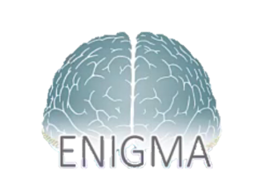
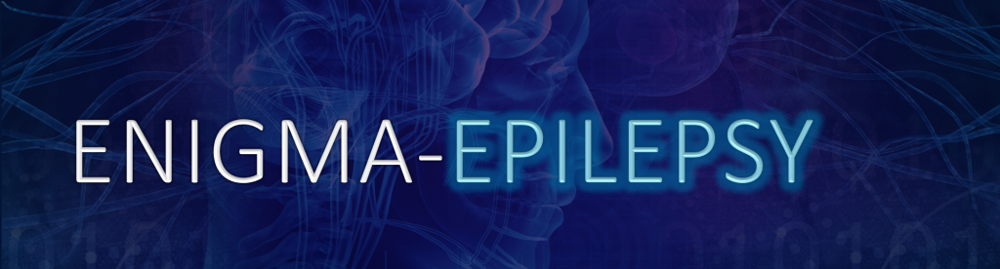

The ENIGMA Consortium is an international effort by leaders worldwide. The Consortium brings together researchers in imaging genomics, neurology and psychiatry, to understand brain structure and function, based on MRI, DTI, fMRI, genetic data and many patient populations.

As the ENIGMA Epilepsy Working Group, we are dedicated to improving our understanding of in vivo neuroanatomical disruptions in people with epilepsy compared to healthy individuals in the general population. The consortium's co-chairs include Professor Sisodiya (UCL, UK), and Professor Carrie McDonald (UCSD, USA).

ENIGMA-Epilepsy's first study of grey matter abnormalities across the common epilepsies was published in Brain. A follow-up investigation of white matter abnormalities was recently published, alongside several secondary research projects. The main objectives of ENIGMA-Epilepsy include:
If your group is interested in contributing towards ENIGMA-Epilepsy, please contact Professor Carrie McDonald (camcdonald@ucsd.edu) and Professor Sanjay Sisodiya (s.sisodiya@ucl.ac.uk). Further information on ENIGMA-Epilepsy, including full analysis protocols, can be found in the links on this page: